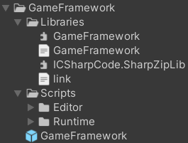
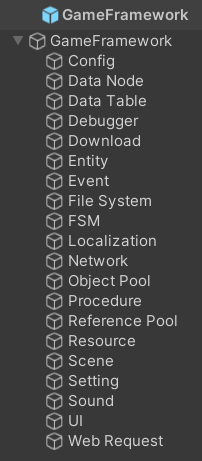
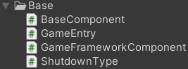

简述
查看该Unity项目，大致可以发现，框架功能偏多，框架虽有但比较简单
首先看看框架结构：

可以看到是：dll+asmdef的搭配
框架
由于dll+asmdef的拆分，框架会显得比较"散"，但并不是没有，大致了解一下代码就会发现体系其实是很完整的

可以看到这就是框架的形式：
在GameFramework物体上有Base组件，在Config物体上有Config组件，由于都是MonoBehaviour，所以可以执行相应操作，同时由某种方式可按顺序执行
UnityGameFramework.Runtime.asmdef
该部分为dll扩展部分，必然会基于dll的实现进行添加或者扩展
其文件夹大致分类为：
- 基
- Base
- 功能
- Config
- Localization
- ...
显然框架必然会是Base中的内容，内容不多：

GameEntry
功能不多，但很重要：
- GetComponent()：获取组件(框架扩展的)
- Showdown()：程序关闭(None/Restart/Quit)
- RegisterComponent()：注册组件
显然，这里最重要的是注册组件，这在Component基类即
public abstract class GameFrameworkComponent : MonoBehaviour
{
protected virtual void Awake()
{
GameEntry.RegisterComponent(this);
}
}
GameFrameworkComponent唯一做的就是
由此会通过s_GameFrameworkComponents在GameEntry中进行存储
BaseComponent
public sealed class BaseComponent : GameFrameworkComponent
包括BaseComponent，以及其它所有功能的扩展Component都将继承于GameFrameworkComponent，由此可将所有的内容都注册到GameEntry中
显然BaseComponent承担的职责是更多的
BaseComponent具有一定的不可配置字段/可配置字段/属性，都将在不同的地方使用
除此以外，更重要的是其生命周期：
protected override void Awake()
{
base.Awake();
InitVersionHelper();
InitLogHelper();
Log.Info("Game Framework Version: {0}", GameFramework.Version.GameFrameworkVersion);
Log.Info("Game Version: {0} ({1})", GameFramework.Version.GameVersion, GameFramework.Version.InternalGameVersion.ToString());
Log.Info("Unity Version: {0}", Application.unityVersion);
#if UNITY_5_3_OR_NEWER || UNITY_5_3
InitCompressionHelper();
InitJsonHelper();
Utility.Converter.ScreenDpi = Screen.dpi;
if (Utility.Converter.ScreenDpi <= 0)
{
Utility.Converter.ScreenDpi = DefaultDpi;
}
m_EditorResourceMode &= Application.isEditor;
if (m_EditorResourceMode)
{
Log.Info("During this run, Game Framework will use editor resource files, which you should validate first.");
}
Application.targetFrameRate = m_FrameRate;
Time.timeScale = m_GameSpeed;
Application.runInBackground = m_RunInBackground;
Screen.sleepTimeout = m_NeverSleep ? SleepTimeout.NeverSleep : SleepTimeout.SystemSetting;
#else
Log.Error("Game Framework only applies with Unity 5.3 and above, but current Unity version is {0}.", Application.unityVersion);
GameEntry.Shutdown(ShutdownType.Quit);
#endif
#if UNITY_5_6_OR_NEWER
Application.lowMemory += OnLowMemory;
#endif
}
private void Start()
{
}
private void Update()
{
GameFrameworkEntry.Update(Time.deltaTime, Time.unscaledDeltaTime);
}
private void OnApplicationQuit()
{
#if UNITY_5_6_OR_NEWER
Application.lowMemory -= OnLowMemory;
#endif
StopAllCoroutines();
}
private void OnDestroy()
{
GameFrameworkEntry.Shutdown();
}
可以发现：其中
比如说InitVersionHelper()就是在填充GameFramework命名空间中的Version.s_VersionHelper
其中值得注意的有：GameFrameworkEntry.Update(Time.deltaTime, Time.unscaledDeltaTime);GameFrameworkEntry.Shutdown();
显然这是dll中的生命周期函数
GameFramework.dll
dll部分被拆分成各个命名空间，简单来说有：
GameFrameworkGameFramework.xxx(Config/Localization/...)
显然
GameFrameworkEntry
与Unity的asmdef部分非常类似，GameEntry对应着这里的
两者的结构是非常相似的，内容如下：
- s_GameFrameworkModules：收集的GameFrameworkModule
- Update()
- Shutdown()
- GetModule() 没有则会CreateModule()
在GameEntry中是Component，GameFrameworkEntry中则是Module
Module
实际中就会有这样的使用：m_SoundManager = GameFrameworkEntry.GetModule<ISoundManager>();
流程如下：
public static T GetModule<T>() where T : class
{
Type type = typeof (T);
if (!type.IsInterface)
throw new GameFrameworkException(Utility.Text.Format("You must get module by interface, but '{0}' is not.", (object) type.FullName));
if (!type.FullName.StartsWith("GameFramework.", StringComparison.Ordinal))
throw new GameFrameworkException(Utility.Text.Format("You must get a Game Framework module, but '{0}' is not.", (object) type.FullName));
string typeName = Utility.Text.Format("{0}.{1}", (object) type.Namespace, (object) type.Name.Substring(1));
return GameFrameworkEntry.GetModule(Type.GetType(typeName) ?? throw new GameFrameworkException(Utility.Text.Format("Can not find Game Framework module type '{0}'.", (object) typeName))) as T;
}
private static GameFrameworkModule GetModule(Type moduleType)
{
foreach (GameFrameworkModule gameFrameworkModule in GameFrameworkEntry.s_GameFrameworkModules)
{
if (gameFrameworkModule.GetType() == moduleType)
return gameFrameworkModule;
}
return GameFrameworkEntry.CreateModule(moduleType);
}
private static GameFrameworkModule CreateModule(Type moduleType)
{
GameFrameworkModule instance = (GameFrameworkModule) Activator.CreateInstance(moduleType);
if (instance == null)
throw new GameFrameworkException(Utility.Text.Format("Can not create module '{0}'.", (object) moduleType.FullName));
LinkedListNode<GameFrameworkModule> node = GameFrameworkEntry.s_GameFrameworkModules.First;
while (node != null && instance.Priority <= node.Value.Priority)
node = node.Next;
if (node != null)
GameFrameworkEntry.s_GameFrameworkModules.AddBefore(node, instance);
else
GameFrameworkEntry.s_GameFrameworkModules.AddLast(instance);
return instance;
}
由此可知：所有Module都是继承与
就像：internal sealed class SoundManager : GameFrameworkModule, ISoundManagerGetModule()并非获取的是GameFrameworkModule基类，而是具体类，可以看到在GetMoudle<T>()中首先获取了实际的类名typeName，通过typeName转换为Type获取了具体类，由此生成的类必然是具体类
生命周期
虽然dll并不基于MonoBehaviour，但是会被BaseComponent调用：
private void Update()
{
GameFrameworkEntry.Update(Time.deltaTime, Time.unscaledDeltaTime);
}
private void OnDestroy()
{
GameFrameworkEntry.Shutdown();
}
具体实现如下：
public static void Update(float elapseSeconds, float realElapseSeconds)
{
foreach (GameFrameworkModule gameFrameworkModule in GameFrameworkEntry.s_GameFrameworkModules)
gameFrameworkModule.Update(elapseSeconds, realElapseSeconds);
}
public static void Shutdown()
{
for (LinkedListNode<GameFrameworkModule> linkedListNode = GameFrameworkEntry.s_GameFrameworkModules.Last; linkedListNode != null; linkedListNode = linkedListNode.Previous)
linkedListNode.Value.Shutdown();
GameFrameworkEntry.s_GameFrameworkModules.Clear();
ReferencePool.ClearAll();
Utility.Marshal.FreeCachedHGlobal();
GameFrameworkLog.SetLogHelper((GameFrameworkLog.ILogHelper) null);
}
显然：Update()/Shutdown()，每个模块(Manager)需实现
所以说对于模块来说有如下生命周期：
- 第一次
GetModule()即创建，此时会通过构造函数初始化 - Update时对所有模块进行
Update() - OnDestroy时对所有模块进行
Shutdown()
Update轮询我们可能觉得不太常见，毕竟这些本质上都属于功能类，提供服务即可，但并不如此
持续轮询的有以下模块：
- DownloadManager
- EntityManager
- EventManager
- FsmManager
- NetworkManager
- ObjectPoolManager
- ResourceManager
- UIManager
- WebRequestManager
其它
以上可以说是框架构成的重要部分，在GameFramework命名空间下还有一些其它的内容：
- 数据结构扩展新增
- GameFrameworkLinkedListRange
- GameFrameworkLinkedList
- GameFrameworkMultiDictionary
- ReferencePool
- TaskPool
- 基础功能
- Version
- GameFrameworkSerializer
- GameFrameworkLog
- 数据解析
- DataProviderCreator
- DataProvider
- IDataProviderHelper(需派生)
- 功能
- Utility
简单总结
可以看得出来，框架部分其实内容不多，只是将dll与asmdef联系起来，并且以Moudle的形式编写功能类，以Component的形式在Unity中扩展
整体来说